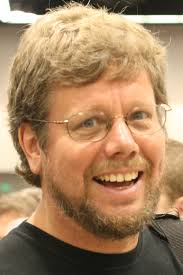

Guido van Rossum é um programador de computadores neerlandês, mais conhecido por ser o autor da linguagem de programação Python.
Na comunidade Python community, ele é conhecido como Benevolent Dictator for Life (BDFL), o que significa que ele continua a supervisionar o processo de desenvolvimento do Python, tomando decisões quando necessário.
Guido van Rossum obteve seu mestrado na Universidade de Amsterdã em 1982. Mais tarde, trabalhou em vários institutos de pesquisa, incluindo o Centrum Wiskunde & Informatica (CWI), em Amsterdã;
Sobre as qualidades da linguagem python, Rossum descreveu:
Uma linguagem fácil e intuitiva enquanto que ainda sendo tão poderosa quanto as maiores competidoras;
Código aberto, para que qualquer um possa contribuir para o desenvolvimento;
Código que fosse tão inteligível quanto inglês;
Adequada para tarefas diárias, permitindo um tempo de desenvolvimento mais curto;
Felicidade de Rossum
Muitas dessas ambições foram realizadas desde então.

Python cresceu e se tornou uma linguagem de programação popular, particularmente no meio da Internet.
Na comunidade do Python, Van Rossum é conhecido como um Benevolent Dictator for Life (Ditador Benevolente Vitalício), o que significa que ele continua a supervisionar o processo de desenvolvimento do Python, tomando as últimas decisões onde necessário.
Em 2002, Van Rossum recebeu o Prêmio por Avanços em Software Livre de 2001 concedido pela FSF na conferência FOSDEM em Bruxelas, Bélgica.
De 2005 a 2012, Van Rossum foi empregado do Google, onde passava metade do tempo desenvolvendo a linguagem Python. Em janeiro de 2013, começou a trabalhar para Dropbox.
Atualmente
Guido van Rossum é irmão de Just van Rossum, um conhecido designer de caracteres tipográficos, que fez a fonte que é usada no logo "Python Powered". Guido vive em Belmont (California) com sua mulher, Kim Knapp, e o filho, Orlijn.